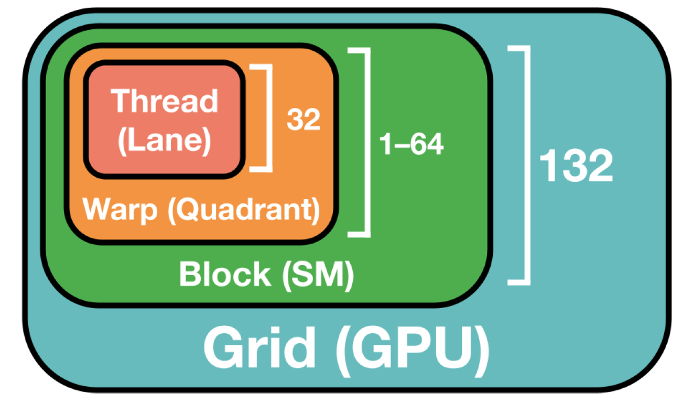
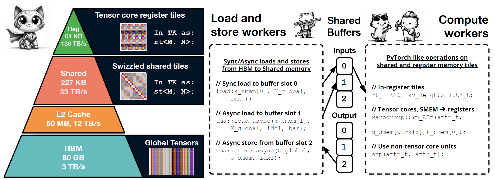
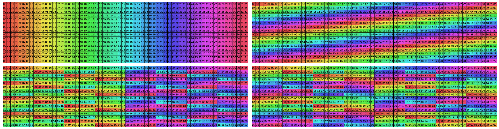
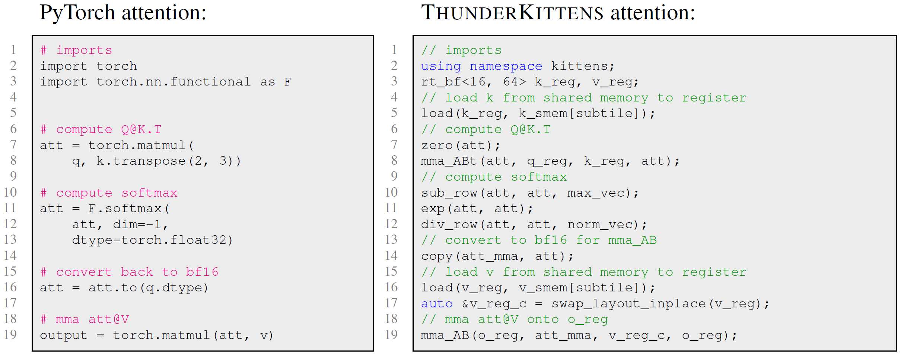
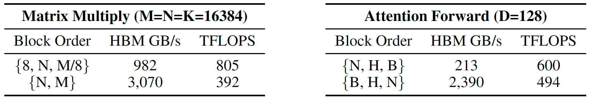
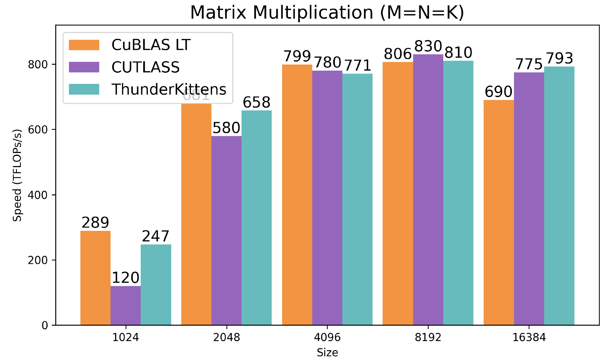
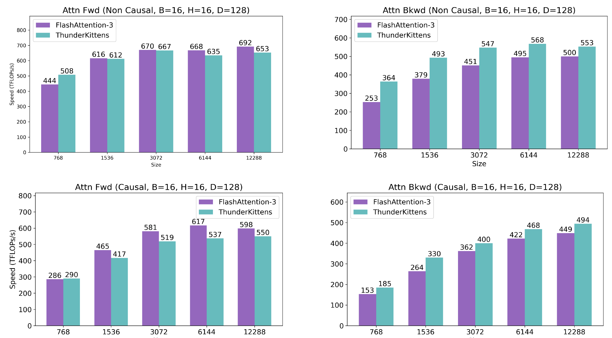
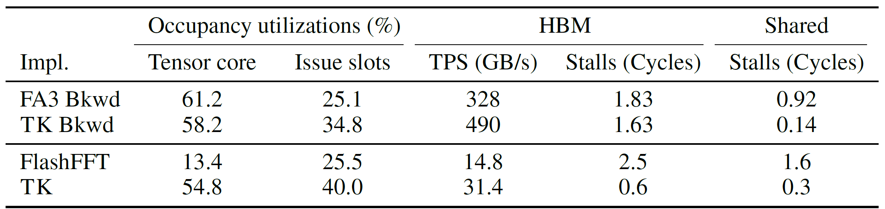

ThunderKittens: Simple, Fast, and Adorable Kernels
ICLR 2025
ThunderKittens: Simple, Fast, and Adorable Kernels
Background & Motivation
The AI Kernel Bottleneck
- Efficiently mapping AI architectures to GPUs is a critical bottleneck in AI progress.
- Hand-written custom kernels are complex to write and often fail to reach theoretical performance limits.
- Even well-established operations like attention suffer from poor kernel support.
- Example: FlashAttention-2 had a 47% performance degradation on the H100 GPU, and it took over two years to develop FlashAttention-3.
The GPU Parallelism Hierarchy
Modern GPUs have three levels of parallelism that kernels must effectively manage.

- Warp-level: Groups of threads executing instructions. Performance is sensitive to memory layouts and bank conflicts.
- Block-level: Groups of warps that share data on a physical core. Higher occupancy can hide latency.
- Grid-level: Many thread blocks executing a kernel. Communication via slow global memory.
The Framework Trade-off
- High-Performance Libraries (e.g., CUTLASS)
- Extremely powerful and flexible (C++ embedded).
- Very complex, with a steep learning curve due to nested templates.
- Compiler-Based Approaches (e.g., Triton)
- Simpler, high-level interfaces.
- Fewer optimization options and challenging to use specialized hardware instructions.
Goal
How far can we go by choosing a small and opinionated set of abstractions?
Can we build a framework that is:
- Easy to use, learn from, and maintain?
- High-performance for a broad range of AI primitives?
- Simple, without sacrificing the ability to achieve peak performance?
System Design of ThunderKittens (TK)
TK is a framework for writing performant AI kernels, built on abstractions that map to the GPU hierarchy.
- Warp-level: Tile data structures with managed layouts.
- Block-level: A program template for asynchronous work.
- Grid-level: Scheduling for pipelining thread-blocks.

Warp Level: Tiles & Managed Layouts
- Tile Data Structures: The basic data structure is a 16x16 matrix tile, maximizing compatibility with tensor cores.
- Managed Layouts: TK automatically picks optimal memory layouts to minimize bank conflicts, a common performance killer.

Top Left: A naive layout with 8-way bank conflicts. Bottom: TK’s layouts with 2-way and no bank conflicts.
A Familiar, PyTorch-like Interface
TK provides a concise set of parallel operations on tiles, making kernel code look similar to high-level PyTorch code.

This simplified interface makes complex GPU programming more accessible.
Block Level: Generalized Asynchronous Template
- TK provides a Load-Compute-Store-Finish (LCSF) template based on the producer-consumer paradigm.
- The developer only needs to populate a few boilerplate functions.
- The template hides memory latency through pipelining and manages synchronization, drastically simplifying asynchronous programming.
Grid Level: Pipelining & L2 Reuse
- TK makes it easy to coordinate thread block launches to reduce overheads and improve memory reuse.
- Persistent Grid: Launch a full set of blocks upfront and feed them tasks, minimizing launch costs and pipeline bubbles.
- Block Launch Order: Optimizing the order in which blocks are launched significantly improves L2 cache reuse and reduces slow HBM accesses.

Changing the block order for Matrix Multiply reduces HBM bandwidth from 3,070 GB/s to 982 GB/s and more than doubles performance.
Evaluation
GEMM kernel
- A single TK matrix multiply kernel (40 lines of code) is competitive with the strongest, highly-tuned baselines like CuBLAS and CUTLASS.

Attention kernel
- TK matches FlashAttention-3 on forward pass performance.
- TK outperforms FlashAttention-3 by 10-40% on the backward pass.

Why is TK Faster?
NCU profiles reveal TK’s efficiency gains. For the attention backward pass, compared to FlashAttention-3, TK:
- Achieves higher HBM memory throughput (490 vs 328 GB/s).
- Incurs 85% fewer stalled cycles on shared memory.
- TK has no bank conflicts, while the profiler reports up to 9.6-way bank conflicts in FA-3.
